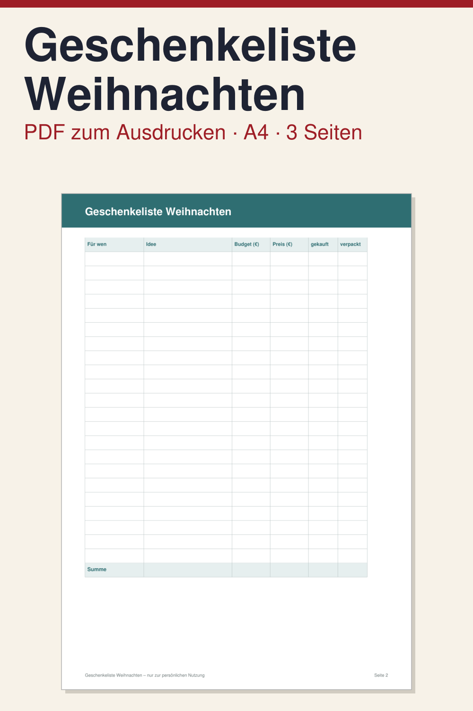

Geschenkeliste Weihnachten: Vorlage zum Ausdrucken

Die Geschenkeliste ist eine schlichte Vorlage zum Ausdrucken, damit Sie bei den Weihnachtsgeschenken den Überblick behalten: wer bekommt was, was darf es kosten, was ist schon besorgt und was schon verpackt.
Das PDF hat 3 Seiten im Format DIN A4 hochkant, auf Deutsch. Enthalten sind ein Deckblatt mit Kurzanleitung, die Geschenkeliste mit Spalten für Person, Idee, Budget und den tatsächlichen Betrag, Kästchen für gekauft und verpackt sowie einer Summenzeile, und eine Seite zum Ideen sammeln, getrennt nach Person und mit Platz für allgemeine Ideen und Notizen.
So nutzen Sie sie: PDF herunterladen, ausdrucken und mit Stift ausfüllen. Tragen Sie zuerst Ideen und Budget ein, später den tatsächlichen Betrag, und haken Sie ab, was erledigt ist. Das PDF ist nicht digital ausfüllbar. Es ist ein digitaler Download, es wird nichts per Post verschickt.
Suchen Sie zusätzlich ein Gesamtbudget, weitere Kosten wie Essen und Dekoration und einen Zeitplan, passt der Weihnachtsplaner mit 7 Seiten besser. Er enthält ebenfalls eine Geschenkeliste. Die Vorlage ist eine Aufschreibhilfe und keine Finanz-, Rechts- oder Steuerberatung.
Hinweis: Alle Inhalte von Klarblatt, auch Vorlagen, Texte und Videos, werden vollständig von KI (Claude, Anthropic) erstellt, ohne kreativen Beitrag eines Menschen.
Vorlage vollständig von KI erstellt, Layout per Software erzeugt.